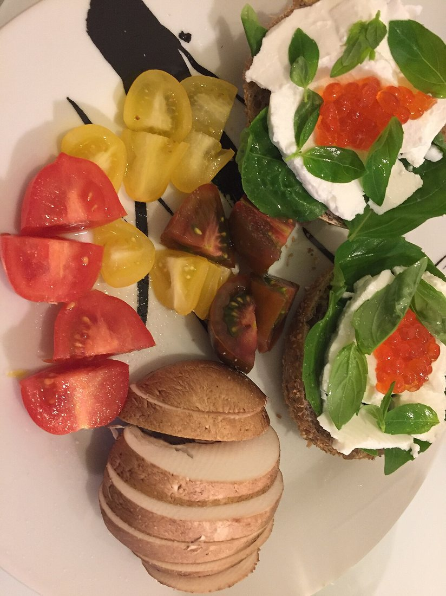
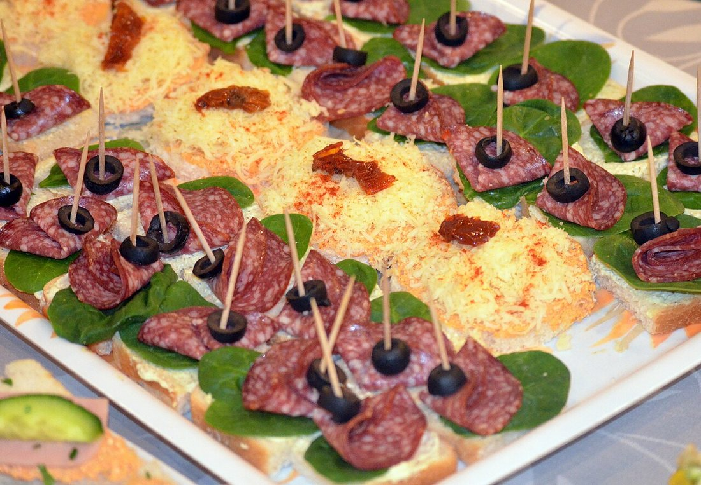
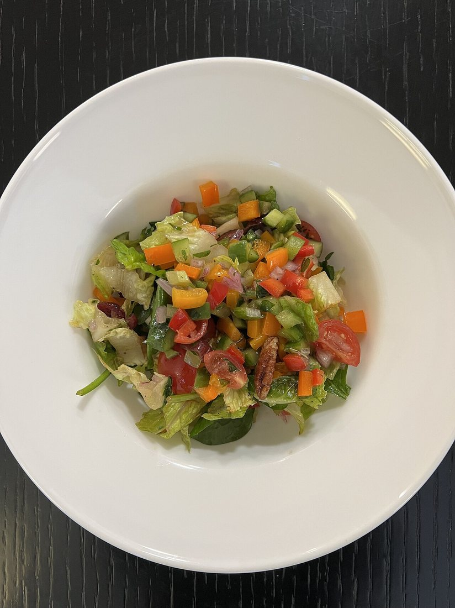
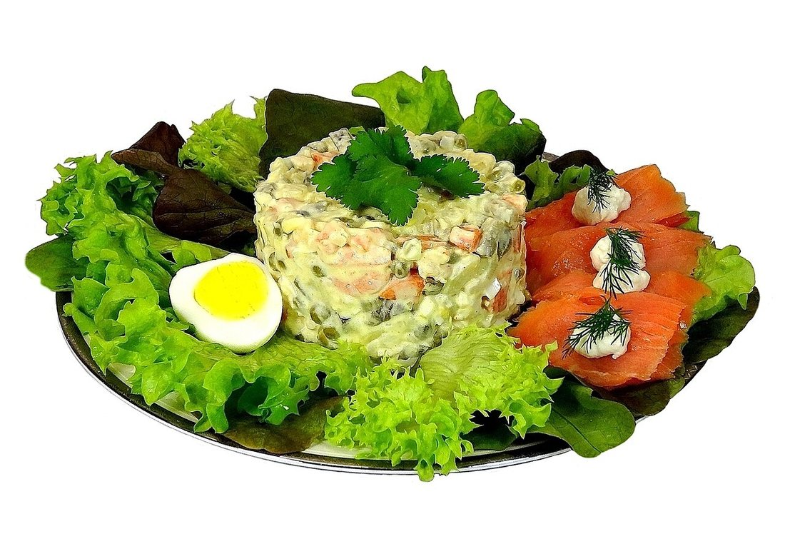
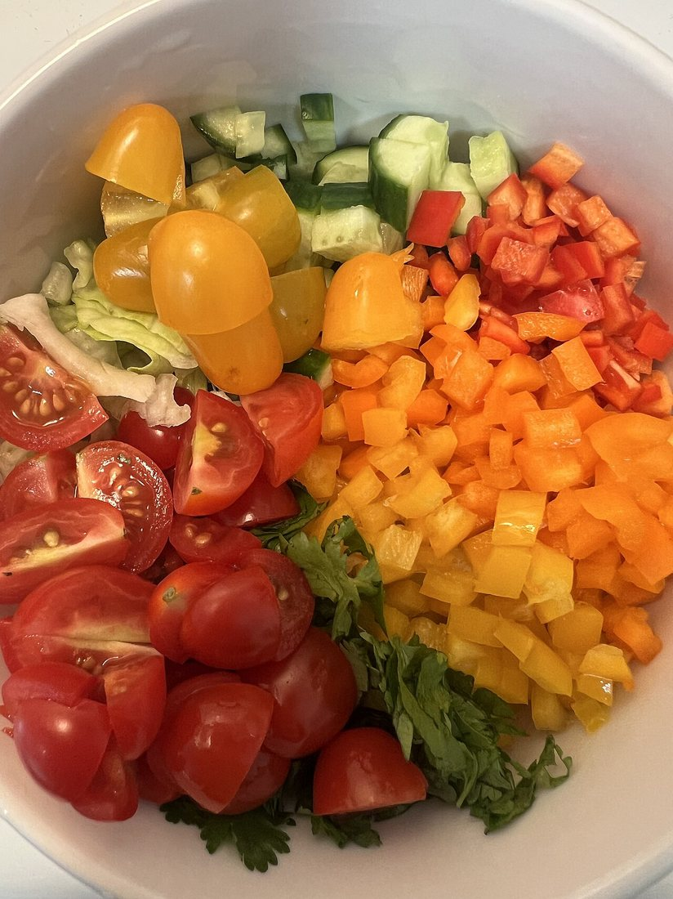
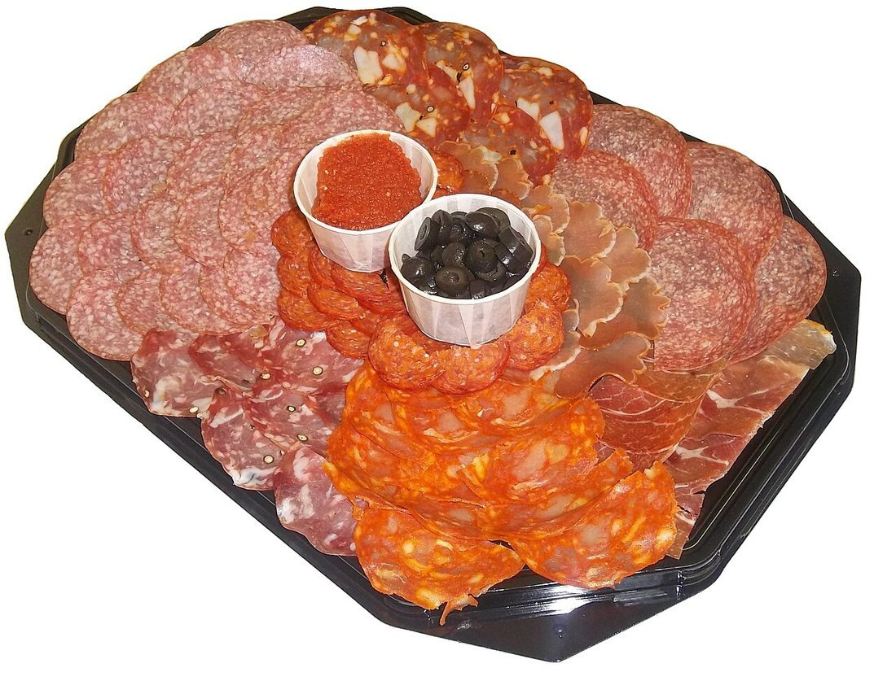

Көркем еңбек · 4-бөлім · Тағам дайындау Art & Craft · Section 4 · Cooking Художественный труд · Раздел 4 · Кулинария
🥪 Бутербродтар, салаттар және суық тағамдар
🥪 Sandwiches, Salads & Cold Appetizers
🥪 Бутерброды, салаты и холодные закуски
Отсыз дайындалатын дәмді тағамдар: түрлері, дайындау ережелері және қауіпсіздік. Tasty dishes made without cooking: their kinds, the rules for making them and safety. Вкусные блюда без тепловой обработки: их виды, правила приготовления и безопасность.
Суық тағамдар мен закускалар — отта пісірмей, дайын өнімдерден жасалатын тағамдар. Оларға бутербродтар, салаттар, нарезкалар жатады. Дастарханда олар бірінші болып беріледі: тәбетті ашады әрі көзге әдемі көрінеді. Мұндай тағамдарды жасау оңай көрінгенімен, өзіндік ережелері бар: өнімдер таза әрі балғын болуы керек, барлық көкөністі жуып, әдемі турау маңызды, ал дайын тағамды суықта сақтап, тез жеу қажет — себебі ол тез бұзылады. Cold dishes and appetizers are foods made without cooking, from ready ingredients. They include sandwiches, salads and platters. At the table they are served first: they whet the appetite and look beautiful. They may seem easy to make, but they have their own rules: the ingredients must be clean and fresh, every vegetable washed and cut neatly, and the finished dish must be kept cold and eaten soon — because it spoils quickly. Холодные блюда и закуски — это еда, приготовленная без тепловой обработки, из готовых продуктов. К ним относятся бутерброды, салаты и нарезки. На столе их подают первыми: они возбуждают аппетит и красиво выглядят. Кажется, что готовить их легко, но у них свои правила: продукты должны быть чистыми и свежими, все овощи вымыты и красиво нарезаны, а готовое блюдо нужно держать в холоде и съедать быстро — ведь оно быстро портится.
Үш топ Three Groups Три группы
БутербродтарSandwichesБутерброды
Нанға май, ірімшік, шұжық, көкөніс қою. Тез әрі тойымды.Bread topped with butter, cheese, sausage, vegetables. Quick and filling.Хлеб с маслом, сыром, колбасой, овощами. Быстро и сытно.
СалаттарSaladsСалаты
Туралған көкөніс, ет, жұмыртқа қоспасы, тұздықпен араластырылған.A mix of chopped vegetables, meat or egg, bound with a dressing.Смесь нарезанных овощей, мяса, яйца, заправленная соусом.
Суық закускаларCold appetizersХолодные закуски
Ет, балық, ірімшік, көкөніс нарезкасы; канапе мен орамалар.Sliced meat, fish, cheese, vegetables; canapés and rolls.Нарезки мяса, рыбы, сыра, овощей; канапе и рулетики.
Бутербродтар Sandwiches Бутерброды
🔍 Суретті басып үлкейтіңіз. 🔍 Tap a photo to enlarge it. 🔍 Нажмите на фото, чтобы увеличить.


🍞 АшықOpenОткрытый
Бір тілім нан, үстіне қосымша. Көзге ашық көрінеді.One slice of bread with topping on top, all visible.Один ломтик хлеба, добавки сверху, всё видно.
🥪 ЖабықClosedЗакрытый
Қосымша екі тілім нанның арасында. Жолға ыңғайлы.The filling is between two slices. Handy to carry.Начинка между двумя ломтиками. Удобно в дорогу.
🎀 КанапеCanapéКанапе
Кішкене, әдемі, шпажкаға түйрелген. Мерекеге.Small, pretty, pinned on a pick. For parties.Маленькие, красивые, на шпажке. Для праздника.
🔥 ГренкиHot toastГорячий
Ірімшікпен қыздырылған ыстық бутерброд (тостер, пеш).A toasted sandwich warmed with cheese (toaster, oven).Поджаренный с сыром горячий бутерброд (тостер, духовка).
Салаттар Salads Салаты
Балғын немесе пісірілген өнімдерден. 🔍 Суретті басыңыз. From fresh or cooked ingredients. 🔍 Tap a photo. Из свежих или варёных продуктов. 🔍 Нажмите на фото.



Салат жасаудың 5 ережесі:5 rules for making a salad:5 правил приготовления салата:
Жуу.Wash.Вымой. Барлық көкөніс пен жасылды ағын сумен жақсылап жу.Wash all vegetables and herbs well under running water.Хорошо вымой все овощи и зелень под проточной водой.
Бірдей тура.Cut evenly.Режь одинаково. Барлық бөлікті шамамен бірдей өлшемде тура.Cut everything into pieces of roughly equal size.Нарезай всё кусочками примерно одного размера.
Суыт.Cool.Охлади. Пісірілген өнімдерді (картоп, жұмыртқа) алдын ала суыт.Cool cooked items (potato, egg) before mixing.Варёные продукты (картофель, яйцо) сначала остуди.
Алдында тұзда.Dress last.Заправляй перед подачей. Тұздықты (майонез, май) тек беру алдында қос.Add the dressing only just before serving.Заправку (майонез, масло) добавляй только перед подачей.
Әсемде.Garnish.Укрась. Үстін жасыл, жұмыртқа, көкөніспен әдемілеп безендір.Decorate the top with herbs, egg or vegetables.Укрась верх зеленью, яйцом или овощами.
Суық закускалар мен нарезкалар Cold Appetizers & Platters Холодные закуски и нарезки
🔍 Суретті басып үлкейтіңіз. 🔍 Tap the photo to enlarge it. 🔍 Нажмите на фото, чтобы увеличить.

Әдемі беру тәсілдері:How to serve beautifully:Как красиво подать:
Жұқа тіл.Slice thin.Тонкая нарезка. Ет пен ірімшікті жұқа, бірдей тілімдермен тура.Cut meat and cheese into thin, even slices.Режь мясо и сыр тонкими ровными ломтиками.
Реті.Arrange.Разложи. Тілімдерді шеңбер не желпуіш етіп қой.Lay the slices in a circle or fan shape.Уложи ломтики кругом или веером.
Түс.Colour.Цвет. Зәйтүн, қызанақ, жасылмен түрлендір.Add olives, tomato and herbs for colour.Добавь оливки, помидор, зелень для цвета.
Суықта.Keep cold.Храни в холоде. Берерден дейін тоңазытқышта ұста.Keep in the fridge until serving.До подачи держи в холодильнике.
Тазалық пен қауіпсіздік Hygiene & Safety Гигиена и безопасность
🧼 Қолды жу.Wash hands.Мой руки. Жұмыс алдында қолды сабындап жу.Wash your hands with soap before you start.Перед работой вымой руки с мылом.
🔪 Пышақты дұрыс ұста.Hold the knife right.Держи нож правильно. Саусақтарды бүгіп, «көпір» жасап тура.Tuck your fingers in, make a "claw" to cut.Подогни пальцы «лесенкой», режь от себя.
🧊 Балғындықты тексер.Check freshness.Проверяй свежесть. Иісі, түсі күмәнді өнімді пайдаланба.Never use food that smells or looks off.Не используй продукты со странным запахом или видом.
🍽️ Бөлек тақта.Separate boards.Разные доски. Ет пен көкөніске бөлек тақта мен пышақ.Use separate boards for meat and vegetables.Для мяса и овощей — разные доски и ножи.
❄️ Суықта сақта.Keep cold.Храни в холоде. Майонезді тағамды бөлмеде ұзақ қалдырма.Don't leave mayonnaise dishes out for long.Не оставляй блюда с майонезом надолго в тепле.
⏱️ Тез же.Eat soon.Ешь свежим. Дайын салатты сол күні жеген дұрыс.A made salad is best eaten the same day.Готовый салат лучше съесть в тот же день.
Дастарханға қою реті Order at the Table Порядок подачи к столу
| Очередь | Блюдо | Зачем |
|---|---|---|
| 1 | Холодные закуски, нарезки | возбуждают аппетит |
| 2 | Салаты, бутерброды | лёгкое начало трапезы |
| 3 | Первое (суп) | горячее блюдо |
| 4 | Второе (горячее) | основная еда |
| 5 | Десерт, напитки | завершение |
| Кезек | Тағам | Не үшін |
|---|---|---|
| 1 | Суық закускалар, нарезкалар | тәбетті ашады |
| 2 | Салаттар, бутербродтар | тамақтың жеңіл басы |
| 3 | Бірінші тағам (сорпа) | ыстық тағам |
| 4 | Екінші тағам (ыстық) | негізгі тамақ |
| 5 | Десерт, сусындар | аяқталуы |
| Order | Dish | Why |
|---|---|---|
| 1 | Cold appetizers, platters | whet the appetite |
| 2 | Salads, sandwiches | a light start to the meal |
| 3 | First course (soup) | a hot dish |
| 4 | Main course (hot) | the main food |
| 5 | Dessert, drinks | the finish |
💬 Қорытынды 💬 In a nutshell 💬 Главное
Бутербродтар, салаттар мен суық закускалар — отсыз дайындалатын, бірақ дәмді әрі әдемі тағамдар. Олардың сыры қарапайым: балғын өнім, таза қол, әдемі турау және суықта сақтау. Осы ережелерді ұстансаң, тағамың дәмді, көркем әрі қауіпсіз болады. Sandwiches, salads and cold appetizers are dishes made without cooking, yet tasty and beautiful. Their secret is simple: fresh food, clean hands, neat cutting and cold storage. Follow these rules and your dish will be delicious, attractive and safe. Бутерброды, салаты и холодные закуски — это блюда без тепловой обработки, но вкусные и красивые. Их секрет прост: свежие продукты, чистые руки, аккуратная нарезка и хранение в холоде. Соблюдай эти правила — и блюдо будет вкусным, нарядным и безопасным.